Liostenogaster flavolineata analysis
Benjamin Taylor
2020/11/13
Experiment 1
Experimental design
Three treatments, assigned at random:
**Social Forager (SocFor, n = 10): A non-reproductive individual was identified on nests with 2-4 individuals. The egg-layer remained on the nest. All nests were manipulated to ensure a maximum of 4 individuals (including focal). Following initial manipulation, any newly emerged wasps were removed to ensure nest size remained the same throughout the experiment
Social Reproductive (SocRep, n = 9): The original egg-layer was removed from the nest to allow the focal wasp to become the dominant reproductive on nests of between 2-3 individuals. Following initial manipulation, any newly emerged wasps were removed to ensure nest size remained the same throughout the experiment and egg-laying was confirmed through brood counts.
Solitary Forager (SolFor, n = 6) & Solitary Reproductive (SolRep, n = 8): To generate solitary phenotypes, all individuals on the nest, except the focal were removed at day 10. Census’ of foraging efforts initially identified individuals which foraged the most, then on day 28, individuals were collected either returning to the nest with forage (SolF) or laying an egg (SolR).
For all manipulations, focal wasps were left on manipulated nests from days 10-28 and census’s were performed every 2 hours during peak foraging times, to determine foraging effort. When each focal individual was 28 days old (18 days after manipulation), they were collected directly from the nest and placed immediately into RNA later.
Phenotypic results
Looking at the phenotypic data, we can see an immediate problem. Solitary reproductives and solitary foragers nominally shouldn’t differ in their foraging rates, yet they clearly do, which makes me question whether the experimental design was exactly as described above. Could it be that Daisy intentionally identified individuals that differed in their foraging rates even while solitary? On the other hand, there is no difference between the two solitary treatments in terms of number of developed eggs, so that’s good. 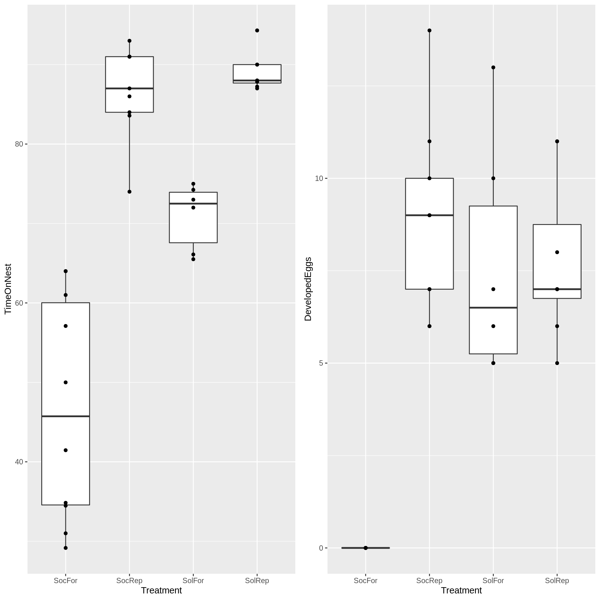
Among individuals from social nests, there isn’t a clear relationship between foraging rate and nest size, nor between foraging rate and rank among individuals that were not rank 1 (although this is hard to assess as only two rank 3 individuals were sequenced): 
Gene expression results
We first perform pairwise comparisons between each different treatment group. Doing so, we find that social foragers show significant differential expression with social reproductives and even more so with solitary reproductives. Apart from this, we find no meaningful signals of differential expression. This is particularly interesting in the case of solitary foragers- these individuals don’t show differential expression with reproductives, but nor do they do so with social foragers. That’s confusing!
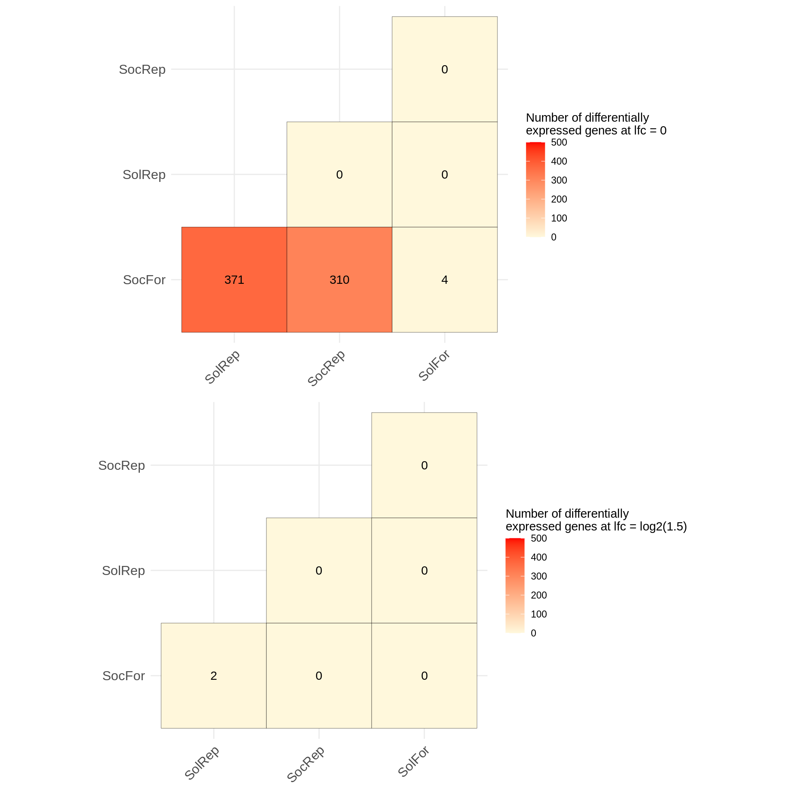
Our initial findings suggest reasonably strong differential expression between reproductives and (solitary) foragers, but seemingly not between solitary and social individuals. When we compare all reproductive vs all foraging individuals, and likewise all social vs all solitary individuals, we confirm this result:
## [1] "Genes differentially expressed between solitary and social individuals at lfc=0: 0"## [1] "Genes differentially expressed between egglaying and foraging individuals at lfc=0: 729"Which GO terms are associated with the set of genes that are differentially expressed between foragers and egglayers? A large number of GO terms are associated with this comparison, of which the most highly-enriched seem to be associated with respiration/energetic processes:
## [1] "GO terms enriched in comparison between egglayers and foragers at p<0.01: 67"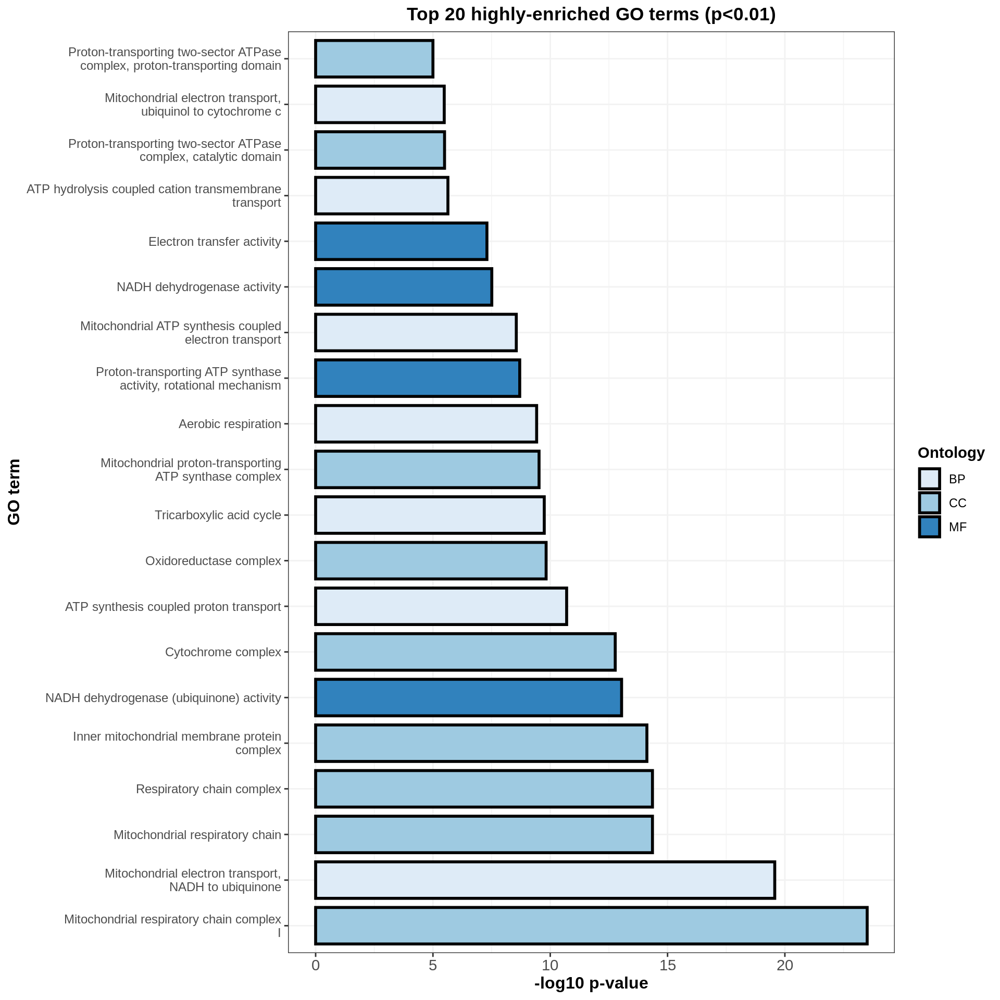
In fact, this list of GO terms seems quite reminiscent of the set that divided queens and workers in the P. dominula data- in fact, there’s quite a strong overlap:
## [1] "GO terms enriched among Polistes dominula SVM caste-predictive genes (p<0.05): 32"## [1] "GO terms enriched among L Flavolineata labour genes (p<0.01): 67"## [1] "Hypergeometric verlap between these two groups: Jaccard index = 0.042, p = 0"What about if we divide the GO terms into ones that are enriched among up- and down-regulated genes in each comparison? Overlap is significant in both directions.
## [1] "GO terms enriched among SVM genes upregulated in Polistes dominula queens (p<0.05): 16"## [1] "GO terms enriched among genes upregulated in L flavolineata reproductives (p<0.01): 51"## [1] "Hypergeometric verlap between these two groups: Jaccard index = 0.063, p = 0"## [1] "GO terms enriched among SVM genes upregulated in Polistes dominula queens (p<0.05): 21"## [1] "GO terms enriched among genes upregulated in L flavolineata foragers (p<0.01): 90"## [1] "Hypergeometric verlap between these two groups: Jaccard index = 0.018, p = 0.022"##COMPARE ACTUAL GENES HERE
Experiment 2
Experimental design
Approximately ninety potential nests were identified with a dominant egg-layer and numerous pupal caps (indicating that wasps would emerge shortly). On days 1-2 all wasps were captured before dawn and marked on all 90 nests. Once all the wasps were marked the experiment began on day 3. Firstly, all newly emerged wasps were marked and the date of emergence recorded. These were all identified as potential focal wasps. Once at least two focal wasps (three or four on larger nests) had emerged, non-focal wasps were removed, leaving the replacement focal wasps, plus the original dominant egg-layer (identified behaviourally). After 20 days nests were selected that had focal wasps of similar ages (within-rank age range of 5 days ± 3 days) for one of the following manipulations:
- Group size = 3 & Removed individual = 2
- Group size = 4 & Removed individual = 2
- Group size = 4 & Removed individual = 3
- Group size = 5 & Removed individual = 2
- Group size = 5 & Removed individual = 3
Once nests had the requisite 2-4 focal wasps (24 days), all nests were censused every 30 minutes during the peak foraging hours (07.00-11.00). This was done for 10 days to allow new focal wasps to settle into their rank on the nest. Each individual’s helping effort was estimated as the proportion of censuses during which she was not on the nes.
The manipulation was carried out after 10 days of censusing; before dawn, a focal wasp (rank 2 or rank 3, as described above) was removed directly from the nest and placed immediately in RNA later for genomic analysis (1st collection). Brood was also removed from the nests at this time. Brood was divided into three categories: eggs, small/medium larvae and large larvae. A proportion, R/N (where R is the number of adults removed and N is the original number of wasps), of each category was removed using fine tweezers. Pupae were not removed as they do not require feeding.
Finally, the helping effort of the newly ranked wasps was measured by censusing as before; nests were allowed 48 hours to settle, then were censused for 5 consecutive days. Some nests had to be removed from the experiment due to the loss of one or more focal female or because focal females didn’t emerge during the experimental period. During the census period, newly emerged wasps were removed immediately from the nests to retain the same ranking on focal nests. Seven days after manipulation, all wasps were collected from the nests and stored immediately in RNA later for brain dissections (2nd collection).
Sequenced individuals divide into the following groups:
- R1_S: Rank 1 individuals (n=21) (always from a manipulated nest)
- R2_C: Rank 2 individuals that were removed as part of a manipulation (n=16) (rank 2 ‘controls’)
- R2_S: Rank 2 individuals from nests on which the rank 3 individual was removed (n=7)
- R2_R: Rank 2 individuals that were previously rank 3 but were promoted following manipulation (n=14)
- R3_C: Rank 3 individual that were removed as part of a manipulation (n=7) (rank 3 ‘controls’)
- R3_R: Rank 3 individuals that were previously rank 4 but were promoted following manipulation (n=15)
- R4_R: Rank 4 individuals that were previously rank 5 but were promoted following manipulation (n=6)
Phenotypic results
First, we look at foraging rates for all individuals prior to manipulation. This should represent the relationship between rank and foraging rate under ‘normal’ circumstances. We can see a pretty strong correlation between foraging rate and rank, although with a high dispersion for foraging rates among rank 2 and rank 3 individuals.
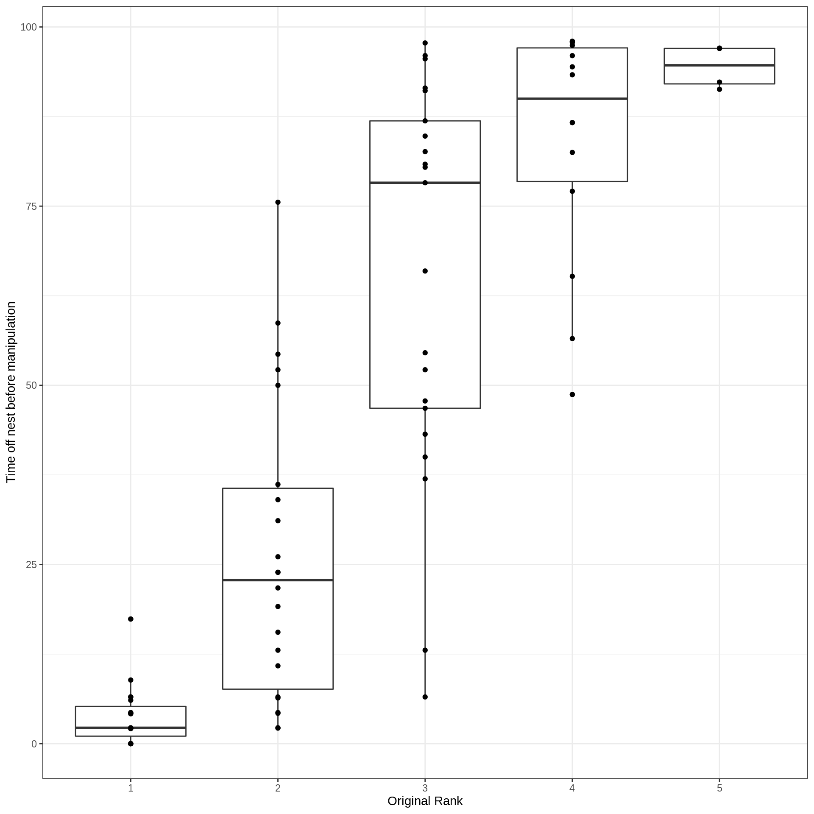
## [1] "Relationship between rank and foraging rate prior to manipulation:"## Estimate Std. Error t value Pr(>|t|)
## (Intercept) -22.22018 5.297833 -4.194202 7.177455e-05
## Rank 26.49343 1.903038 13.921655 7.602736e-23We also expect that individuals will exhibit higher mean foraging rates on smaller nests, since a smaller number of individuals are maintaining the same foraging effort. While there is no relationship between nest size and foraging rate when ignoring rank, including rank as a factor in an additive linear model reveals that both effects are present: individuals forage more both when they’re of a lower rank and when there are fewer individuals in their nest.
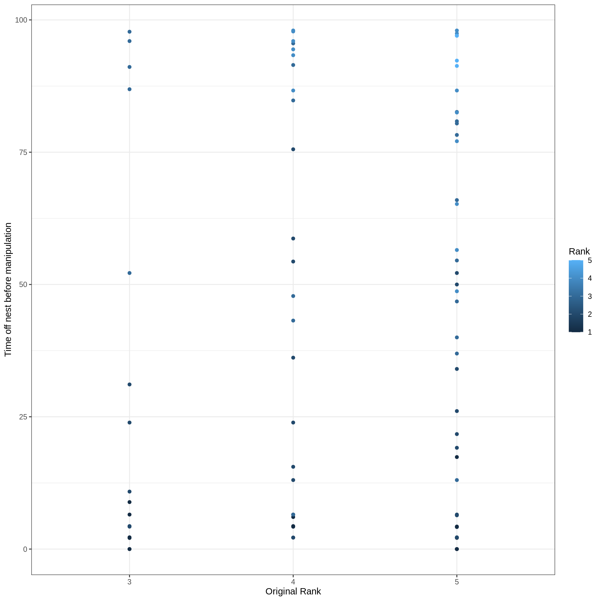
## [1] "Relationship between nest size and foraging rate prior to manipulation:"## Estimate Std. Error t value Pr(>|t|)
## (Intercept) 20.580494 23.169239 0.888268 0.3771277
## NestSize 5.619882 5.317137 1.056938 0.2938026## [1] "Relationship between nest size, rank and foraging rate prior to manipulation:"## Estimate Std. Error t value Pr(>|t|)
## (Intercept) -2.630823 12.452247 -0.211273 8.332324e-01
## Rank 27.368568 1.945671 14.066392 5.629093e-23
## NestSize -5.084332 2.932921 -1.733539 8.700262e-02Our next prediction is that individuals should alter their foraging rate when other individuals from the same nest are removed. Of course, there are two possible effects here: removing an individual makes the nest smaller, so individuals should forage more after manipulation; but, removing an individual also increases the rank of some individuals in the nest, so those individual may also increase their foraging rate. Alas, we lack the necessary controls to properly separate these effects- the only rank for which we can compare individuals’ foraging rates before and after nest size manipulation without the confounding effect of rank changes is rank 2.
Foraging rate for this group does not change significantly following nest size manipulation, nor do we find strong evidence for changes in mean foraging rate for any other group (but in the latter cases it’s impossible to tell if this is just the effect of individuals’ rank increases being canceled out by the change in group size).
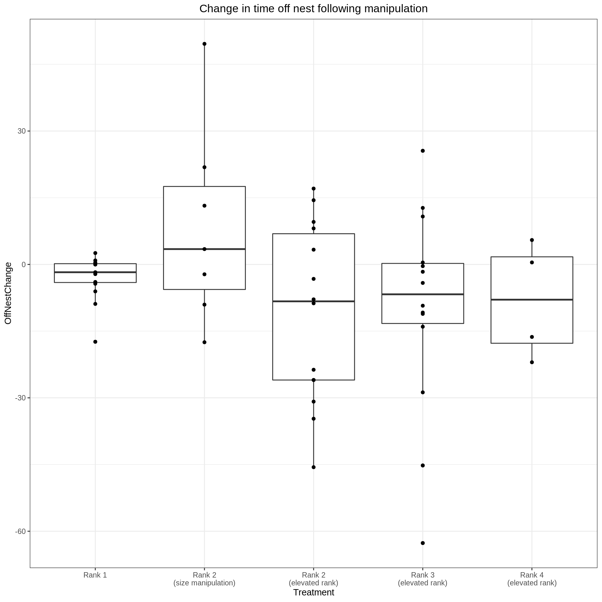
Let’s move on to ovarian data. These are fairly clear: rank 1individuals almost uniformly have well-developed ovaries with plenty of eggs, with all others having no ovarian development. A small number of size-manipulated rank 2 individuals are the exception, being somewhere intermediate in ovarian development.
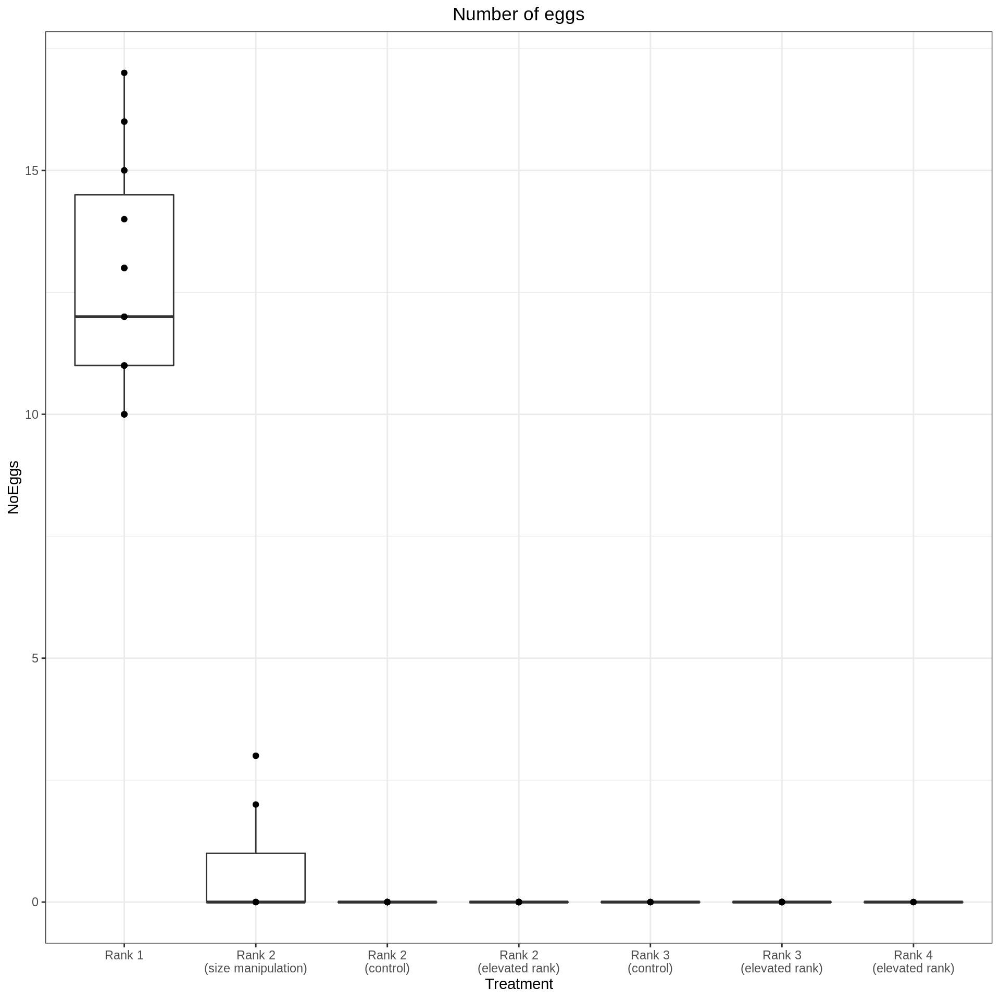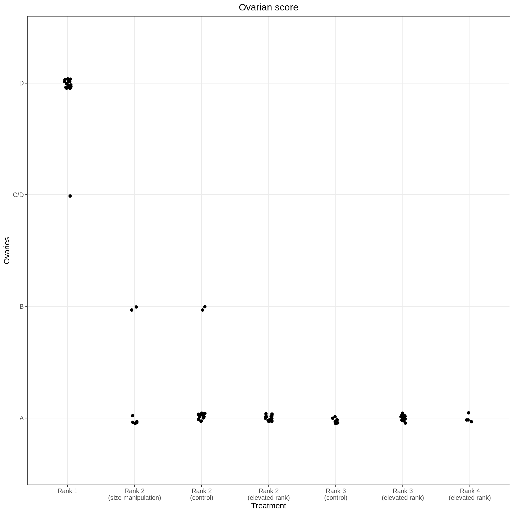
Gene expression results
Let’s first get a general idea of the shape of the data by performing PCA on all genes. The results don’t tell us all that much- PCs 1 and 2 seem to be weakly structured by individuals’ ranks, but there’s no obvious clustering.
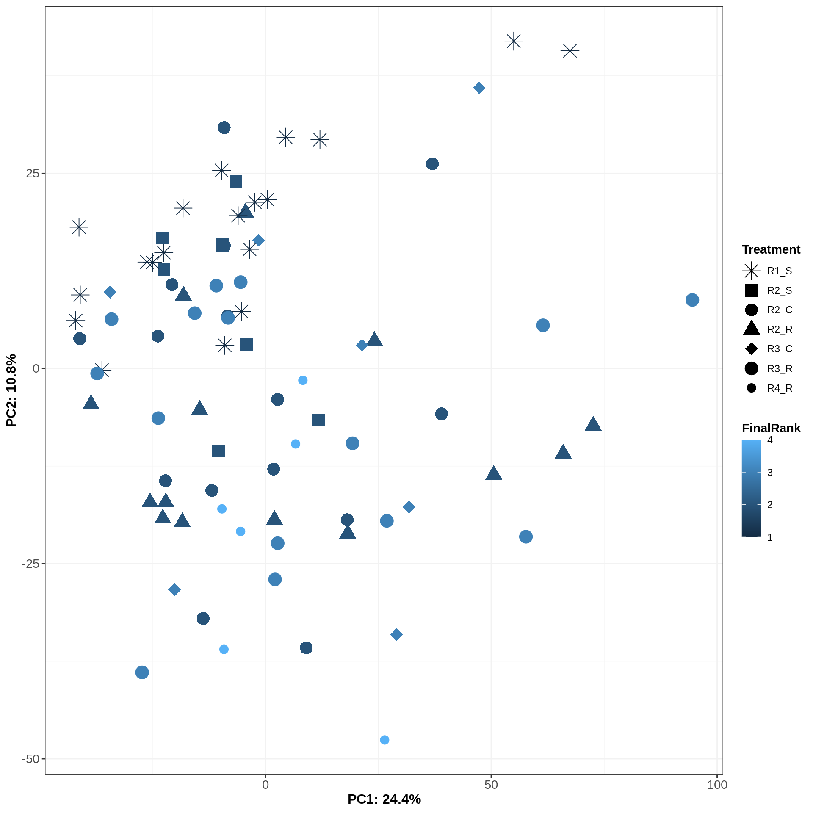
We’ll now assess differential expression between treatment groups to see if any stand out as being particularly different to one another. Two results stick out: * Rank 1 individuals are strongly differentiated from every other treatment group except for unmanipulated rank 2 individuals from manipulated nests * Rank 3 controls seems to show fairly strong signals of differential expression with individuals that have been elevated in rank
It’s hard to know how to interpret these results, but the fact that Rank 1 individuals seem to be so clearly differentiated from other treatment groups suggests that we might want to consider leaving them out of any continuous analyses. We might also want to consider leaving out R2_S individuals.
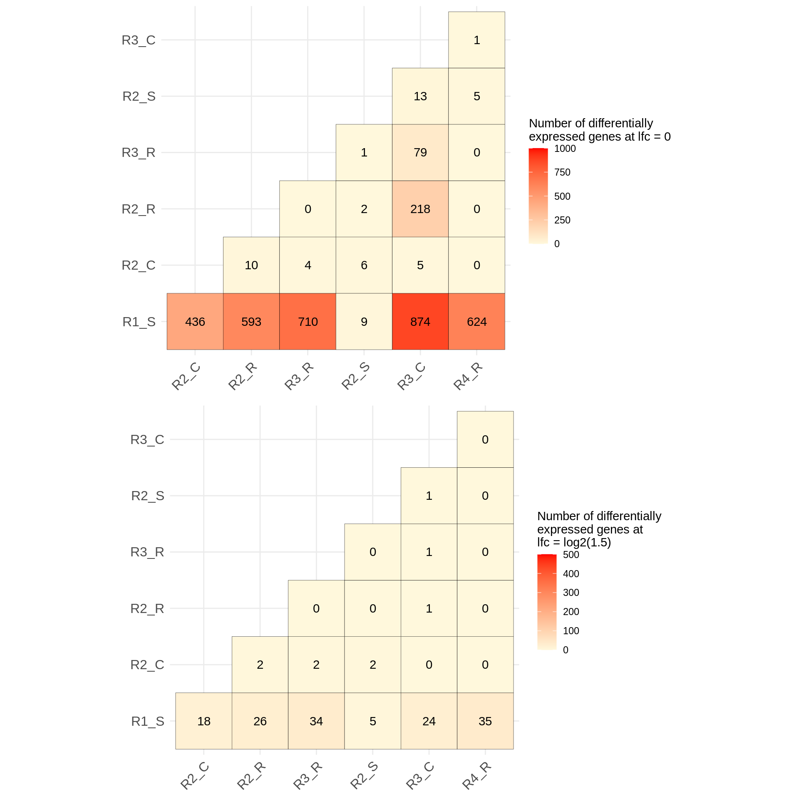
We’ll now look to see which genes’ expression (if any) are significantly correlated with rank, age and foraging rate when treating those as continuous variables. As rank 1 seems to stand out as being very different to all other treatment groups, we’ll try running each analysis both with and without the inclusion of rank 1 individuals. Some key results from this:
- Rank 1 individuals strongly drive our results! After excluding rank 1s, we find greatly reduced numbers of differentially expressed genes
- Individuals’ original ranks appear to be better predictors of gene expression than do their new ranks
- Foraging effort is associated with a much larger number of genes than either rank measure.
- Surprisingly, we don’t actually find any correlation between age and gene expression
## Trait DEG_all DEGs_noRank1
## 1 Original rank 1204 45
## 2 Final rank 1085 1
## 3 Foraging rate 1282 256
## 4 Age NA 0- It’s also worth noting that the genetic signature of rank seems to be entirely subsumed by foraging rate- when we take the residuals of rank on foraging rate and combine these with foraging rate in an additive model, we find no DEGs with the residuals. By contrast, an additive model with Rank and (ForagingRate~Rank)$residuals as the factors identifies ~20 genes whose expression is correlated with the residuals.
## [1] "Additive model with foraging rate and residuals of rank on foraging rate: 254 genes associated with foraging rate plus 0 genes associated with rank residuals"## [1] "Additive model with rank and residuals of foraging rate on rank: 53 genes associated with rank plus 18 genes associated with foraging rate residuals"These anlyses suggest that foraging rate per se, rather than rank, seems to be the most important determinant of gene expression, at least among non-R1 individuals (this result is recapitulated if we rerun these analyses including rank 1 individuals). Now we perform GO analysis on the full set of ~250 genes associated with foraging rate: doing so identifies a decent number of GO terms, many of them associated with protein binding or bioenergetic processes. Also in there is Multicellular organism reproduction, which is nice to see!
## [1] "GO terms enriched among genes upregulated with foraging rate at p<0.01: 29"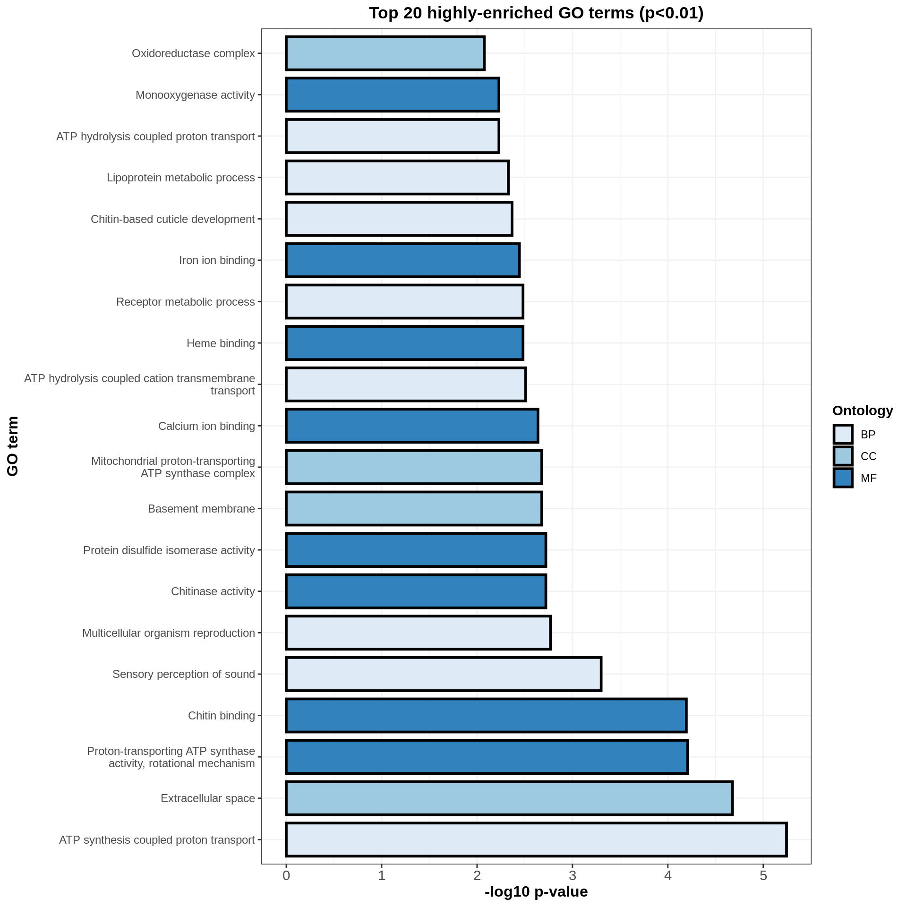
It’s interesting to see so many GO terms associated with basal functions such as protein binding enriched in our set of foraging genes- this is reminiscent of the sets of GO terms we found enriched among P dominula SVM genes and also among genes that were differentially expressed between reproductives and foragers in experiment 1. In fact, there’s a strongly significant overlap between GO terms that are enriched with foraging rate in experiment 2 and genes that differentiate reproductives and foragers in experiment 1, which isn’t very surprising but is still good to know. On the other hand, there are no shared GO terms between experiment 2 foraging genes and P dominula SVM genes.
## [1] "GO terms enriched among Polistes dominula SVM caste-predictive genes (p<0.05): 32"## [1] "GO terms enriched among L Flavolineata experiment 1 labour genes (p<0.01): 67"## [1] "GO terms enriched among L Flavolineata experiment 2 foraging genes (p<0.01): 29"## [1] "Hypergeometric verlap between these experiment 1 and experiment 2: Jaccard index = 0.091, p = 0"## [1] "Hypergeometric verlap between these P dominula SVM genes and experiment 2: Jaccard index = 0, p = 1"Also unsurprising but important: the set of experiment 1 foraging vs reproductive genes overlap significantly with the set of experiment 2 foraging genes.
## $hypergeom
## [1] 1.724717e-07
##
## $jaccard
## [1] 0.04232804NB: we’d also like to ask whether the sets of genes (not just the GO terms) that vary with reproductive investment in experiments 1 and 2 overlap with the genes implicated in the Pdom SVM, but to do this I need to generate orthologues between the two- this is a work in progress.
It’s worth noting that the above analyses combine all non-rank 1 individuals, irrespective of whether they changed rank or not. Unfortunately, the experimental design does not make it easy to compare control to rank-changed individuals. The interesting comparison would be between individuals who originated at the same rank, but one of which increased in rank while the other did not. The only rank for which these data are available is rank 3- we have rank 3 controls and individuals that were promoted from rank 3 to rank 2. Unfortunately, the controls and the elevated individuals are also differentiated by colony size manipulation (controls were from unmanipulated colonies)… therefore this comparison is a bit crap, as we can’t separate out the effects that are a result of colony manipulation and those that are a result of changes in rank. Honestly, I don’t know how to deal with this in a way that would be defensible, so I’m going to ignore it for now.
Instead, let’s now perform WGCNA on all non-rank 1 individuals together. Doing so, we find two modules (“darkturquoise” and “green”) whose expression is quite strongly correlated with foraging rate (one positively, one negatively). Darkturquoise is a small module with 83 genes, while green is larger at 606 genes.
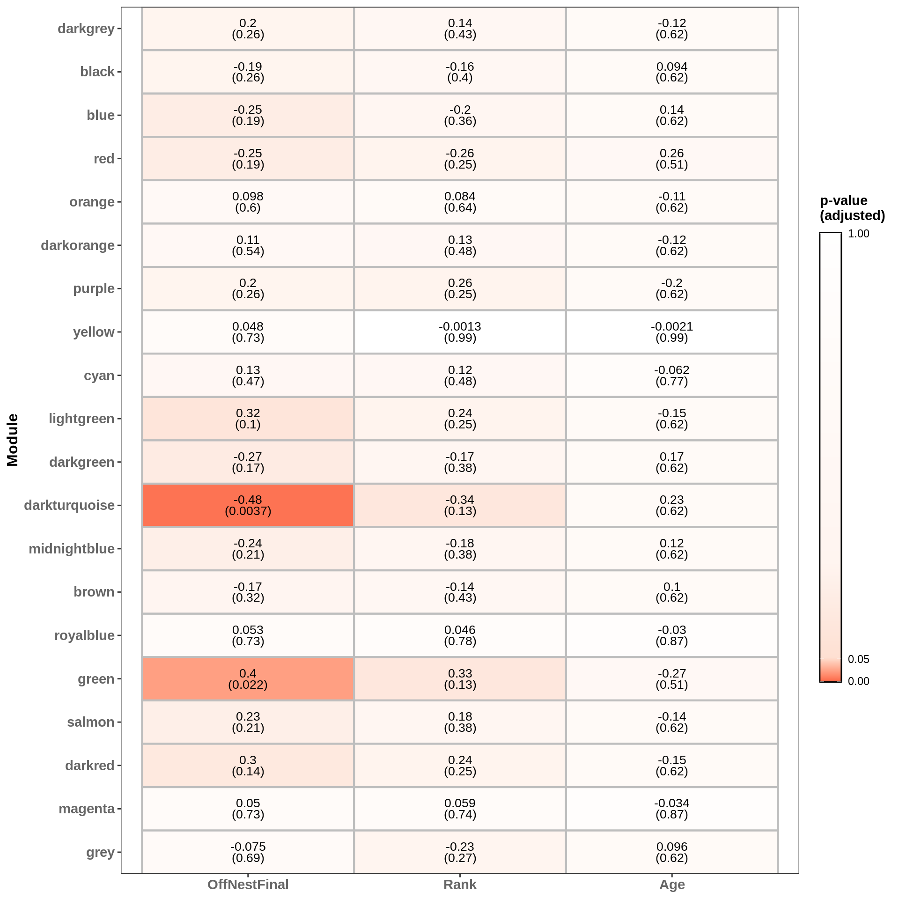
The centrality of genes within both modules is strongly correlated with the significance of those genes as predictors of foraging rate, which suggests that the relationship between the modules and foraging rate is more than coincidental:
Looking at the GO terms associated with these two modules: darkturquoise is associated with a smaller set of terms, with an emphasis on sensory processes, while green is associated with a larger set of terms that include biosynthetic and respiratory processes.
## $hypergeom
## [1] 0.004967564
##
## $jaccard
## [1] 0.02521008## $hypergeom
## [1] 5.019209e-41
##
## $jaccard
## [1] 0.2265625## [1] "GO terms enriched among genes in module 'darkturquoise' at p<0.01: 14"
## [1] "GO terms enriched among genes in module 'green' at p<0.01: 90"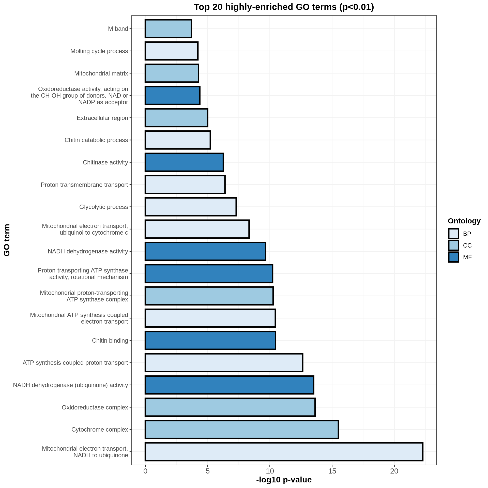
The ‘toolkit-y’ GO terms that are associated with module green are somewhat reminiscent of the GO terms that are associated with the SVM genes in our P dominula data. Sure enough, there is a significant overlap between the terms associated with Green and the terms associated with the SVM genes. By contrast, there is no overlap between the SVM terms and the DarkTurquoise terms. This result also holds for the comparison between these modules and the terms that were associated with reproduction vs foraging in experiment 1.
## [1] "overlap between Green GO terms and Pdom SVM GO terms:"## $hypergeom
## [1] 0.004967564
##
## $jaccard
## [1] 0.02521008## [1] "overlap between Green GO terms and Experiment 1 reproductive vs forager GO terms:"## $hypergeom
## [1] 5.019209e-41
##
## $jaccard
## [1] 0.2265625## [1] "overlap between DarkTurquoise GO terms and Pdom SVM GO terms:"## $hypergeom
## [1] 1
##
## $jaccard
## [1] 0## [1] "overlap between DarkTurquoise GO terms and Experiment 1 reproductive vs forager GO terms:"## $hypergeom
## [1] 1
##
## $jaccard
## [1] 0What if we divide GO terms by their directionality? Sure enough, Green GO terms overlap significantly with GO terms that are upregulated in Pdom queens and experiment 1 reproductives, but not with GO terms that downregulated in those comparisons.
## [1] "overlap between Green GO terms and upregulated Experiment 1 reproductive vs forager GO terms:"## $hypergeom
## [1] 2.120415e-62
##
## $jaccard
## [1] 0.3428571## [1] "overlap between Green GO terms and downregulated Experiment 1 reproductive vs forager GO terms:"## $hypergeom
## [1] 1
##
## $jaccard
## [1] 0## [1] "overlap between Green GO terms and upregulated SVM GO terms:"## $hypergeom
## [1] 5.515064e-07
##
## $jaccard
## [1] 0.04950495## [1] "overlap between Green GO terms and downregulated SVM GO terms:"## $hypergeom
## [1] 0.2061464
##
## $jaccard
## [1] 0.009090909From these results, we might conclude that DarkTurquoise is a module that represents the ‘boring’ parts of foraging (catching and killing prey), while Green is a module that reflects the ‘interesting’ part of foraging (investment into indirect rather than direct fitness gains). This is a really nice story that works out well but for one thing, namely that the correlation of the modules with foraging rate is the reverse of what we’d expect. DarkTurquoise is negatively correlated with foraging rate, while Green is positively associated with foraging rate, which doesn’t seem to make sense given our GO results! I am currently investigating this to try to work out what’s going on.